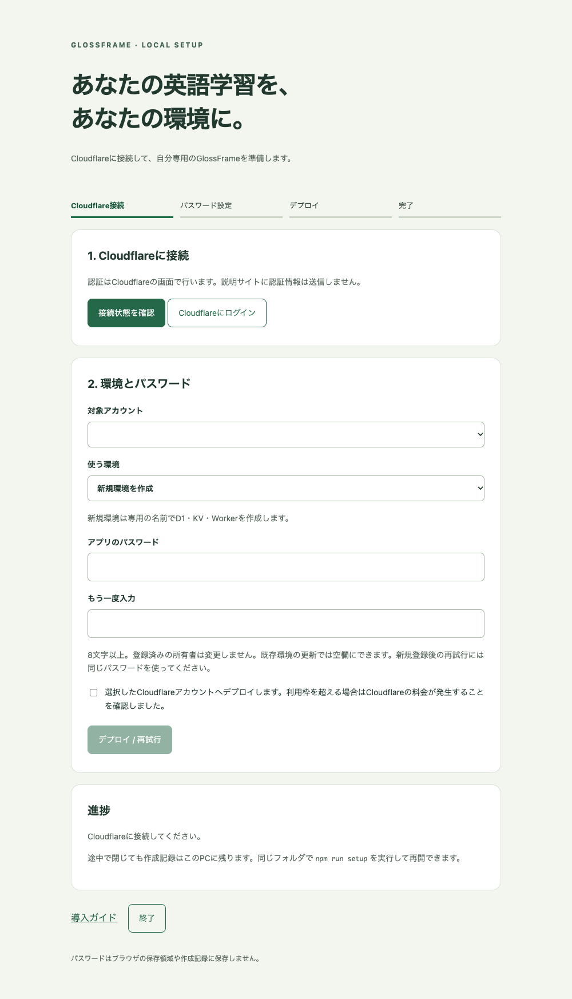

01
PCで準備して、セットアップを開く
Node.jsとGitを用意し、ターミナルで実行します。セットアップ機能が含まれるソースを使用してください。
git clone https://github.com/edoaki/glossframe.git
cd glossframe
npm ci
npm run setupこのPCだけで開けるセットアップ画面が起動します。自動で開かない場合は、ターミナルに表示されたURLをブラウザで開いてください。URLは他人と共有しないでください。
YOUR WORDS. YOUR SPACE.
写真の英語を読み取り、訳を確かめ、単語を覚える。
GlossFrameを、あなたのCloudflareに準備しましょう。
対応アプリ: 0.1.0 / A・Bセットアップ機能は実装・検証中。公開リポジトリに npm run setup がない場合は、既存の導入手順を利用してください。
Cloudflareアカウントとインターネット接続が必要です。PCで導入する場合はNode.js 22以上とGitを用意してください。公開リポジトリのクローンにGitHubログインは不要です。
OCRは端末内、翻訳はWorkers AI、単語帳はD1、保存する画像はKVを使います。Cloudflareの無料枠には上限があります。課金設定・利用量はCloudflare公式画面で確認してください。
対象OS: macOS / Linux / Windows。macOSでローカル検証済み。Linux・Windowsのクリーン環境、本番デプロイ、スマホ実機は確認待ちです。
A · WITH YOUR COMPUTER
進捗のチェックはこのブラウザに保存されます。パスワード・認証情報はこの説明サイトに入力しません。
Node.jsとGitを用意し、ターミナルで実行します。セットアップ機能が含まれるソースを使用してください。
git clone https://github.com/edoaki/glossframe.git
cd glossframe
npm ci
npm run setupこのPCだけで開けるセットアップ画面が起動します。自動で開かない場合は、ターミナルに表示されたURLをブラウザで開いてください。URLは他人と共有しないでください。
「接続状態を確認」を押します。未ログインなら「Cloudflareにログイン」を押し、Cloudflareの公式画面でログイン・権限許可を行います。終わったらローカル画面に戻り、対象アカウントを確認してください。

新規導入では「新規環境」を選び、アプリ専用のパスワードを2回入力します。8〜200文字で、CloudflareやGitHubとは別のパスワードにしてください。
アカウントと利用枠を確認して「デプロイ / 再試行」を押します。D1・KVの準備、ビルド、DB更新、所有者登録、公開、起動確認の順に進みます。数分かかる場合があります。
既存の wrangler.jsonc がある場合は「既存環境」を選びます。登録済みの所有者と学習データを保持して更新します。更新前にはCloudflareでDBのバックアップを確認してください。
完了画面のHTTPS URLを開いて、設定したパスワードでログインしてください。スマホはQRコードから同じURLを開けます。
OCRの初回準備後、画像の読み取り、AI翻訳、単語帳への保存、ログアウトと再ログインを確かめましょう。確認が終わったら、PCのセットアップ画面で「終了」を押してください。
WHEN SOMETHING STOPS
通信とCloudflareのログイン状態を確認し、ローカル画面からログインをやり直してください。対象アカウントにD1・KV・Workers・Workers AIを利用する権限が必要です。
失敗した段階を画面で確認し、接続・利用上限・権限を確認して「デプロイ / 再試行」を押します。作成済みリソースはPCの記録から再利用します。画面を閉じた場合は、同じフォルダで npm run setup を実行してください。
.local-work/setup/state.json と wrangler.jsonc は削除しないでください。パスワードは保存しないので、再試行時に同じパスワードを入力します。登録済みなら再登録しません。
PCのChromeではリンクを右クリックし「リンクを分割ビューで開く」を選べます。項目がない場合は別タブで開いてください。このサイトから分割ビューを自動起動することはありません。Chrome公式の操作説明
Cloudflare管理権限のあるPCで、アプリのフォルダから npm run password:reset を実行します。学習データは保持し、既存セッションを失効させます。
B · PHONE ONLY · 通しテスト中
ログインと許可だけCloudflareの画面へ移動し、その後はこのサイトの導入GUIに戻ります。次にすることと作成の進み具合を、同じ画面で確認できます。GitHubアカウントは不要です。
新しい導入GUIは実環境での通しテスト中です。認証画面まで確認済み。別アカウントでの作成完了とスマホ実機での動作確認は続けています。
GUIの「Cloudflareに接続する」を押します。アカウントがある場合はログインします。ない場合は「Sign up」から登録します。Googleで登録する場合は「Continue with Google」を押し、使うGoogleアカウントを選びます。メール確認を求められたら完了してください。
GlossFrame Setupの許可画面で対象アカウントと5つの権限を確認し、「Authorize」を押します。Workers・D1・KV・AIの操作とアカウント情報の参照に使います。
導入GUIへ自動で戻ります。作成先アカウントを確認し、アプリ専用のパスワードを8〜200文字で決めます。確認欄にも入力し、作成を開始します。パスワードは手元のパスワード管理アプリへ保存してください。
保存場所の準備、所有者登録、ファイルの転送、公開を順に進めます。画面を閉じずに待ってください。通信が途切れたら、表示される再試行の案内に従います。画面を開き直した場合はCloudflareへ再接続し、同じアカウントで続けてください。
完成画面からアプリを開き、決めたパスワードでログインします。URLを保存し、画像の読み取り・翻訳・単語保存を確認してください。
GitHub連携が必要な方式の記録は、アカウントがある／ない場合の詳しい手順に残しています。新しい導入GUIとは操作が異なります。
新しいGUIは初回作成向けです。この方式の更新GUIはまだ用意していません。学習データはアプリからバックアップJSONを保存し、画像は別途保管してください。
Cloudflareの無料枠を使います。有料プランへの変更は行いません。無料枠には上限があり、上限到達時は処理が失敗することがあります。